000 · Tanah rumput tunggalterrain · atlas (0,0)Cantum tepi/tengah mengikut permukaan sebenar; collision dibina berasingan.
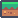
001 · Rumput kiri tertutupterrain · atlas (18,0)Cantum tepi/tengah mengikut permukaan sebenar; collision dibina berasingan.
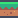
002 · Rumput tengah tertutupterrain · atlas (36,0)Cantum tepi/tengah mengikut permukaan sebenar; collision dibina berasingan.
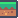
003 · Rumput kanan tertutupterrain · atlas (54,0)Cantum tepi/tengah mengikut permukaan sebenar; collision dibina berasingan.
004 · Isi tanah Aterrain · atlas (72,0)Cantum tepi/tengah mengikut permukaan sebenar; collision dibina berasingan.
005 · Isi tanah Bterrain · atlas (90,0)Cantum tepi/tengah mengikut permukaan sebenar; collision dibina berasingan.
006 · Blok tanah berbingkaihiasan · atlas (108,0)Tiada collision; jangan janjikan mekanik daripada rupa.
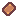
007 · Serpihan besarhiasan · atlas (126,0)Tiada collision; jangan janjikan mekanik daripada rupa. Identiti/tujuan asal belum disahkan; jangan jadikan asas mekanik.
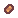
008 · Serpihan kecilhiasan · atlas (144,0)Tiada collision; jangan janjikan mekanik daripada rupa. Identiti/tujuan asal belum disahkan; jangan jadikan asas mekanik.
009 · Kotak emas kosonginteraksi · atlas (162,0)Komponen visual; perlu kod interaksi dan keadaan.
010 · Kotak tanda !interaksi · atlas (180,0)Komponen visual; perlu kod interaksi dan keadaan.
011 · Kotak tanda bulatinteraksi · atlas (198,0)Komponen visual; perlu kod interaksi dan keadaan.
012 · Pelantar merah kiriterrain · atlas (216,0)Cantum tepi/tengah mengikut permukaan sebenar; collision dibina berasingan.
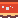
013 · Pelantar merah tengahterrain · atlas (234,0)Cantum tepi/tengah mengikut permukaan sebenar; collision dibina berasingan.
014 · Pelantar merah tunggalterrain · atlas (252,0)Cantum tepi/tengah mengikut permukaan sebenar; collision dibina berasingan.
015 · Pelantar merah kananterrain · atlas (270,0)Cantum tepi/tengah mengikut permukaan sebenar; collision dibina berasingan.
016 · Daun tunggalhiasan · atlas (288,0)Tiada collision; jangan janjikan mekanik daripada rupa.
017 · Kanopi atas kirihiasan · atlas (306,0)Tiada collision; jangan janjikan mekanik daripada rupa.
018 · Kanopi atas tengahhiasan · atlas (324,0)Tiada collision; jangan janjikan mekanik daripada rupa.
019 · Kanopi atas kananhiasan · atlas (342,0)Tiada collision; jangan janjikan mekanik daripada rupa.
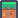
020 · Rumput atas tunggalterrain · atlas (0,18)Cantum tepi/tengah mengikut permukaan sebenar; collision dibina berasingan.
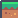
021 · Rumput atas kiriterrain · atlas (18,18)Cantum tepi/tengah mengikut permukaan sebenar; collision dibina berasingan.
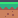
022 · Rumput atas tengahterrain · atlas (36,18)Cantum tepi/tengah mengikut permukaan sebenar; collision dibina berasingan.
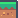
023 · Rumput atas kananterrain · atlas (54,18)Cantum tepi/tengah mengikut permukaan sebenar; collision dibina berasingan.
024 · Tanah sudut dalam Aterrain · atlas (72,18)Cantum tepi/tengah mengikut permukaan sebenar; collision dibina berasingan.
025 · Tanah sudut dalam Bterrain · atlas (90,18)Cantum tepi/tengah mengikut permukaan sebenar; collision dibina berasingan.
026 · Kotak kayu diagonalinteraksi · atlas (108,18)Komponen visual; perlu kod interaksi dan keadaan.
027 · Kunciinteraksi · atlas (126,18)Komponen visual; perlu kod interaksi dan keadaan.
028 · Kotak tanda dua arahinteraksi · atlas (144,18)Komponen visual; perlu kod interaksi dan keadaan.
029 · Blok kayu kosonginteraksi · atlas (162,18)Komponen visual; perlu kod interaksi dan keadaan.
030 · Blok kayu tanda Tinteraksi · atlas (180,18)Komponen visual; perlu kod interaksi dan keadaan.
031 · Blok kayu tanda bulatinteraksi · atlas (198,18)Komponen visual; perlu kod interaksi dan keadaan.
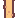
032 · Batang tepi Ahiasan · atlas (216,18)Tiada collision; jangan janjikan mekanik daripada rupa.
033 · Air permukaan Ahazard · atlas (234,18)Duri/air bukan hazard automatik; hanya aktif jika reka bentuk dan recovery ditentukan.
034 · Air bekas atas kirihazard · atlas (252,18)Duri/air bukan hazard automatik; hanya aktif jika reka bentuk dan recovery ditentukan.
035 · Air bekas atas kananhazard · atlas (270,18)Duri/air bukan hazard automatik; hanya aktif jika reka bentuk dan recovery ditentukan.
036 · Daun sisi tunggalhiasan · atlas (288,18)Tiada collision; jangan janjikan mekanik daripada rupa.
037 · Kanopi tengah kirihiasan · atlas (306,18)Tiada collision; jangan janjikan mekanik daripada rupa.
038 · Kanopi tengahhiasan · atlas (324,18)Tiada collision; jangan janjikan mekanik daripada rupa.
039 · Kanopi tengah kananhiasan · atlas (342,18)Tiada collision; jangan janjikan mekanik daripada rupa.
040 · Tanah jalur tunggalterrain · atlas (0,36)Cantum tepi/tengah mengikut permukaan sebenar; collision dibina berasingan.
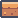
041 · Tanah jalur kiriterrain · atlas (18,36)Cantum tepi/tengah mengikut permukaan sebenar; collision dibina berasingan.
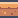
042 · Tanah jalur tengahterrain · atlas (36,36)Cantum tepi/tengah mengikut permukaan sebenar; collision dibina berasingan.
043 · Tanah jalur kananterrain · atlas (54,36)Cantum tepi/tengah mengikut permukaan sebenar; collision dibina berasingan.
044 · Hati penuhhiasan · atlas (72,36)Ikon UI sahaja; katalog ini tidak mencadangkan sistem nyawa baharu.
045 · Hati separuhhiasan · atlas (90,36)Ikon UI sahaja; katalog ini tidak mencadangkan sistem nyawa baharu.
046 · Hati kosonghiasan · atlas (108,36)Ikon UI sahaja; katalog ini tidak mencadangkan sistem nyawa baharu.
047 · Kotak kayu silanginteraksi · atlas (126,36)Komponen visual; perlu kod interaksi dan keadaan.
048 · Kayu pelantar kiriterrain · atlas (144,36)Cantum tepi/tengah mengikut permukaan sebenar; collision dibina berasingan.
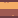
049 · Kayu pelantar tengahterrain · atlas (162,36)Cantum tepi/tengah mengikut permukaan sebenar; collision dibina berasingan.
050 · Kayu pelantar kananterrain · atlas (180,36)Cantum tepi/tengah mengikut permukaan sebenar; collision dibina berasingan.
051 · Tangga pendekinteraksi · atlas (198,36)Tangga visual; perlu zon panjat, titik masuk/keluar dan pelantar selamat.
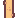
052 · Batang tepi Bhiasan · atlas (216,36)Tiada collision; jangan janjikan mekanik daripada rupa.
053 · Air permukaan Bhazard · atlas (234,36)Duri/air bukan hazard automatik; hanya aktif jika reka bentuk dan recovery ditentukan.
054 · Air bekas tengah kirihazard · atlas (252,36)Duri/air bukan hazard automatik; hanya aktif jika reka bentuk dan recovery ditentukan.
055 · Air bekas tengah kananhazard · atlas (270,36)Duri/air bukan hazard automatik; hanya aktif jika reka bentuk dan recovery ditentukan.
056 · Daun bawah tunggalhiasan · atlas (288,36)Tiada collision; jangan janjikan mekanik daripada rupa.
057 · Kanopi bawah kirihiasan · atlas (306,36)Tiada collision; jangan janjikan mekanik daripada rupa.
058 · Kanopi bawah tengahhiasan · atlas (324,36)Tiada collision; jangan janjikan mekanik daripada rupa.
059 · Kanopi bawah kananhiasan · atlas (342,36)Tiada collision; jangan janjikan mekanik daripada rupa.
060 · Tanah atas rata tunggalterrain · atlas (0,54)Cantum tepi/tengah mengikut permukaan sebenar; collision dibina berasingan.
061 · Tanah atas rata kiriterrain · atlas (18,54)Cantum tepi/tengah mengikut permukaan sebenar; collision dibina berasingan.
062 · Tanah atas rata tengahterrain · atlas (36,54)Cantum tepi/tengah mengikut permukaan sebenar; collision dibina berasingan.
063 · Tanah atas rata kananterrain · atlas (54,54)Cantum tepi/tengah mengikut permukaan sebenar; collision dibina berasingan.
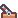
064 · Tuil pose kiriinteraksi · atlas (72,54)Komponen visual; perlu kod interaksi dan keadaan.
065 · Tuil pose tegakinteraksi · atlas (90,54)Komponen visual; perlu kod interaksi dan keadaan.
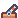
066 · Tuil pose kananinteraksi · atlas (108,54)Komponen visual; perlu kod interaksi dan keadaan.
067 · Permata birucollectible · atlas (126,54)Ganjaran pilihan; perlu overlap, ID stabil dan save.
068 · Durihazard · atlas (144,54)Duri/air bukan hazard automatik; hanya aktif jika reka bentuk dan recovery ditentukan.
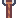
069 · Tiang sokongan bercabanghiasan · atlas (162,54)Tiada collision; jangan janjikan mekanik daripada rupa.
070 · Bentuk U kecilhiasan · atlas (180,54)Tiada collision; jangan janjikan mekanik daripada rupa. Identiti/tujuan asal belum disahkan; jangan jadikan asas mekanik.
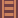
071 · Tangga sambunganinteraksi · atlas (198,54)Tangga visual; perlu zon panjat, titik masuk/keluar dan pelantar selamat.
072 · Akar batanghiasan · atlas (216,54)Tiada collision; jangan janjikan mekanik daripada rupa.
073 · Isi airhazard · atlas (234,54)Duri/air bukan hazard automatik; hanya aktif jika reka bentuk dan recovery ditentukan.
074 · Air bekas bawah kirihazard · atlas (252,54)Duri/air bukan hazard automatik; hanya aktif jika reka bentuk dan recovery ditentukan.
075 · Air bekas bawah kananhazard · atlas (270,54)Duri/air bukan hazard automatik; hanya aktif jika reka bentuk dan recovery ditentukan.
076 · Kanopi pendek tunggalhiasan · atlas (288,54)Tiada collision; jangan janjikan mekanik daripada rupa.
077 · Kanopi pendek kirihiasan · atlas (306,54)Tiada collision; jangan janjikan mekanik daripada rupa.
078 · Kanopi pendek tengahhiasan · atlas (324,54)Tiada collision; jangan janjikan mekanik daripada rupa.
079 · Kanopi pendek kananhiasan · atlas (342,54)Tiada collision; jangan janjikan mekanik daripada rupa.
080 · Terrain pucat tunggalterrain · atlas (0,72)Cantum tepi/tengah mengikut permukaan sebenar; collision dibina berasingan.
081 · Terrain pucat kiriterrain · atlas (18,72)Cantum tepi/tengah mengikut permukaan sebenar; collision dibina berasingan.
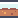
082 · Terrain pucat tengahterrain · atlas (36,72)Cantum tepi/tengah mengikut permukaan sebenar; collision dibina berasingan.
083 · Terrain pucat kananterrain · atlas (54,72)Cantum tepi/tengah mengikut permukaan sebenar; collision dibina berasingan.
084 · Papan anak panah kananhiasan · atlas (72,72)Tiada collision; jangan janjikan mekanik daripada rupa.
085 · Papan kosonghiasan · atlas (90,72)Tiada collision; jangan janjikan mekanik daripada rupa.
086 · Papan anak panah kirihiasan · atlas (108,72)Tiada collision; jangan janjikan mekanik daripada rupa.
087 · Papan bentuk kirihiasan · atlas (126,72)Tiada collision; jangan janjikan mekanik daripada rupa.
088 · Papan bentuk kananhiasan · atlas (144,72)Tiada collision; jangan janjikan mekanik daripada rupa.
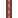
089 · Tiang kayuhiasan · atlas (162,72)Tiada collision; jangan janjikan mekanik daripada rupa.
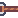
090 · Penyambung kayu kirihiasan · atlas (180,72)Tiada collision; jangan janjikan mekanik daripada rupa.
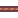
091 · Rasuk kayuhiasan · atlas (198,72)Tiada collision; jangan janjikan mekanik daripada rupa.
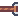
092 · Penyambung kayu kananhiasan · atlas (216,72)Tiada collision; jangan janjikan mekanik daripada rupa.
093 · Paip siku atas kiriinteraksi · atlas (234,72)Paip statik; fungsi, urutan, aliran dan output semuanya memerlukan kod.
094 · Paip siku atas kananinteraksi · atlas (252,72)Paip statik; fungsi, urutan, aliran dan output semuanya memerlukan kod.
095 · Paip menegak atasinteraksi · atlas (270,72)Paip statik; fungsi, urutan, aliran dan output semuanya memerlukan kod.
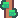
096 · Dahan berdaun Ahiasan · atlas (288,72)Tiada collision; jangan janjikan mekanik daripada rupa.
097 · Daun berjuntaihiasan · atlas (306,72)Tiada collision; jangan janjikan mekanik daripada rupa.
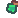
098 · Gumpalan daun kecilhiasan · atlas (324,72)Tiada collision; jangan janjikan mekanik daripada rupa.
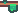
099 · Dahan berdaun Bhiasan · atlas (342,72)Tiada collision; jangan janjikan mekanik daripada rupa.
100 · Terrain pucat terbuka tunggalterrain · atlas (0,90)Cantum tepi/tengah mengikut permukaan sebenar; collision dibina berasingan.
101 · Terrain pucat terbuka kiriterrain · atlas (18,90)Cantum tepi/tengah mengikut permukaan sebenar; collision dibina berasingan.
102 · Terrain pucat terbuka tengahterrain · atlas (36,90)Cantum tepi/tengah mengikut permukaan sebenar; collision dibina berasingan.
103 · Terrain pucat terbuka kananterrain · atlas (54,90)Cantum tepi/tengah mengikut permukaan sebenar; collision dibina berasingan.
104 · Isi tanah bertompokterrain · atlas (72,90)Cantum tepi/tengah mengikut permukaan sebenar; collision dibina berasingan.
105 · Pagar silanghiasan · atlas (90,90)Tiada collision; jangan janjikan mekanik daripada rupa.
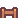
106 · Pagar mendatarhiasan · atlas (108,90)Tiada collision; jangan janjikan mekanik daripada rupa.
107 · Butang merah rendahinteraksi · atlas (126,90)Komponen visual; perlu kod interaksi dan keadaan.
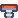
108 · Butang merah tinggiinteraksi · atlas (144,90)Komponen visual; perlu kod interaksi dan keadaan.
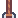
109 · Hujung bawah tianghiasan · atlas (162,90)Tiada collision; jangan janjikan mekanik daripada rupa.
110 · Tiang benderainteraksi · atlas (180,90)Komponen visual; perlu kod interaksi dan keadaan.
111 · Bendera pose Ainteraksi · atlas (198,90)Komponen visual; perlu kod interaksi dan keadaan.
112 · Bendera pose Binteraksi · atlas (216,90)Komponen visual; perlu kod interaksi dan keadaan.
113 · Paip siku bawah kiriinteraksi · atlas (234,90)Paip statik; fungsi, urutan, aliran dan output semuanya memerlukan kod.
114 · Paip siku bawah kananinteraksi · atlas (252,90)Paip statik; fungsi, urutan, aliran dan output semuanya memerlukan kod.
115 · Paip menegak tengahinteraksi · atlas (270,90)Paip statik; fungsi, urutan, aliran dan output semuanya memerlukan kod.
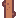
116 · Batang sempithiasan · atlas (288,90)Tiada collision; jangan janjikan mekanik daripada rupa.
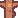
117 · Cabang batanghiasan · atlas (306,90)Tiada collision; jangan janjikan mekanik daripada rupa.
118 · Ranting kecilhiasan · atlas (324,90)Tiada collision; jangan janjikan mekanik daripada rupa.
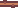
119 · Dahan mendatarhiasan · atlas (342,90)Tiada collision; jangan janjikan mekanik daripada rupa.
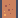
120 · Tanah sisi kiri Aterrain · atlas (0,108)Cantum tepi/tengah mengikut permukaan sebenar; collision dibina berasingan.
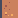
121 · Tanah sisi kanan Aterrain · atlas (18,108)Cantum tepi/tengah mengikut permukaan sebenar; collision dibina berasingan.
122 · Tanah sisi kiri Bterrain · atlas (36,108)Cantum tepi/tengah mengikut permukaan sebenar; collision dibina berasingan.
123 · Tanah sisi kanan Bterrain · atlas (54,108)Cantum tepi/tengah mengikut permukaan sebenar; collision dibina berasingan.
124 · Tumbuhan kecilhiasan · atlas (72,108)Tiada collision; jangan janjikan mekanik daripada rupa.
125 · Tumbuhan tinggihiasan · atlas (90,108)Tiada collision; jangan janjikan mekanik daripada rupa.
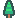
126 · Pokok konifer kecilhiasan · atlas (108,108)Tiada collision; jangan janjikan mekanik daripada rupa.
127 · Kaktushiasan · atlas (126,108)Tiada collision; jangan janjikan mekanik daripada rupa.
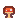
128 · Cendawanhiasan · atlas (144,108)Tiada collision; jangan janjikan mekanik daripada rupa.
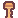
129 · Papan tinggihiasan · atlas (162,108)Tiada collision; jangan janjikan mekanik daripada rupa.
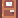
130 · Pintu bahagian atasinteraksi · atlas (180,108)Komponen visual; perlu kod interaksi dan keadaan.
131 · Batang kelabu sempithiasan · atlas (198,108)Tiada collision; jangan janjikan mekanik daripada rupa.
132 · Paip mendatar kiriinteraksi · atlas (216,108)Paip statik; fungsi, urutan, aliran dan output semuanya memerlukan kod.
133 · Paip mendatar tengahinteraksi · atlas (234,108)Paip statik; fungsi, urutan, aliran dan output semuanya memerlukan kod.
134 · Paip mendatar kananinteraksi · atlas (252,108)Paip statik; fungsi, urutan, aliran dan output semuanya memerlukan kod.
135 · Paip menegak bawahinteraksi · atlas (270,108)Paip statik; fungsi, urutan, aliran dan output semuanya memerlukan kod.
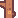
136 · Batang pangkal kirihiasan · atlas (288,108)Tiada collision; jangan janjikan mekanik daripada rupa.
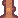
137 · Batang pangkal tengahhiasan · atlas (306,108)Tiada collision; jangan janjikan mekanik daripada rupa.
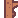
138 · Batang bercabang sisihiasan · atlas (324,108)Tiada collision; jangan janjikan mekanik daripada rupa.
139 · Ranting bersuduthiasan · atlas (342,108)Tiada collision; jangan janjikan mekanik daripada rupa.
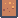
140 · Tanah bawah tunggalterrain · atlas (0,126)Cantum tepi/tengah mengikut permukaan sebenar; collision dibina berasingan.
141 · Tanah bawah kiriterrain · atlas (18,126)Cantum tepi/tengah mengikut permukaan sebenar; collision dibina berasingan.
142 · Tanah bawah tengahterrain · atlas (36,126)Cantum tepi/tengah mengikut permukaan sebenar; collision dibina berasingan.
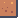
143 · Tanah bawah kananterrain · atlas (54,126)Cantum tepi/tengah mengikut permukaan sebenar; collision dibina berasingan.
144 · Bentuk kecil bertandukhiasan · atlas (72,126)Tiada collision; jangan janjikan mekanik daripada rupa. Identiti/tujuan asal belum disahkan; jangan jadikan asas mekanik.
145 · Bentuk nyalaan / makhlukhiasan · atlas (90,126)Tiada collision; jangan janjikan mekanik daripada rupa. Identiti/tujuan asal belum disahkan; jangan jadikan asas mekanik.
146 · Plat coklathiasan · atlas (108,126)Tiada collision; jangan janjikan mekanik daripada rupa. Identiti/tujuan asal belum disahkan; jangan jadikan asas mekanik.
147 · Plat kelabuhiasan · atlas (126,126)Tiada collision; jangan janjikan mekanik daripada rupa. Identiti/tujuan asal belum disahkan; jangan jadikan asas mekanik.
148 · Suis biru timbulinteraksi · atlas (144,126)Komponen visual; perlu kod interaksi dan keadaan.
149 · Suis biru rendahinteraksi · atlas (162,126)Komponen visual; perlu kod interaksi dan keadaan.
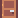
150 · Pintu bahagian bawahinteraksi · atlas (180,126)Komponen visual; perlu kod interaksi dan keadaan.
151 · Syiling mukacollectible · atlas (198,126)Dua rupa syiling; bukan bukti urutan animasi lengkap.
152 · Syiling sisicollectible · atlas (216,126)Dua rupa syiling; bukan bukti urutan animasi lengkap.
153 · Bentuk pucat bawah kirihiasan · atlas (234,126)Tiada collision; jangan janjikan mekanik daripada rupa. Identiti/tujuan asal belum disahkan; jangan jadikan asas mekanik.
154 · Bentuk pucat bawah tengahhiasan · atlas (252,126)Tiada collision; jangan janjikan mekanik daripada rupa. Identiti/tujuan asal belum disahkan; jangan jadikan asas mekanik.
155 · Bentuk pucat bawah kananhiasan · atlas (270,126)Tiada collision; jangan janjikan mekanik daripada rupa. Identiti/tujuan asal belum disahkan; jangan jadikan asas mekanik.
156 · Bentuk pucat kecilhiasan · atlas (288,126)Tiada collision; jangan janjikan mekanik daripada rupa. Identiti/tujuan asal belum disahkan; jangan jadikan asas mekanik.
157 · Titik berbingkaihiasan · atlas (306,126)Tiada collision; jangan janjikan mekanik daripada rupa. Identiti/tujuan asal belum disahkan; jangan jadikan asas mekanik.
158 · Simbol silanghiasan · atlas (324,126)Tiada collision; jangan janjikan mekanik daripada rupa. Identiti/tujuan asal belum disahkan; jangan jadikan asas mekanik.
159 · Simbol garis seronghiasan · atlas (342,126)Tiada collision; jangan janjikan mekanik daripada rupa. Identiti/tujuan asal belum disahkan; jangan jadikan asas mekanik.
160 · Digit A 0hiasan · atlas (0,144)Label nombor pada blok/output; bukan blok fizik dengan sendirinya.
161 · Digit A 1hiasan · atlas (18,144)Label nombor pada blok/output; bukan blok fizik dengan sendirinya.
162 · Digit A 2hiasan · atlas (36,144)Label nombor pada blok/output; bukan blok fizik dengan sendirinya.
163 · Digit A 3hiasan · atlas (54,144)Label nombor pada blok/output; bukan blok fizik dengan sendirinya.
164 · Digit A 4hiasan · atlas (72,144)Label nombor pada blok/output; bukan blok fizik dengan sendirinya.
165 · Digit A 5hiasan · atlas (90,144)Label nombor pada blok/output; bukan blok fizik dengan sendirinya.
166 · Digit A 6hiasan · atlas (108,144)Label nombor pada blok/output; bukan blok fizik dengan sendirinya.
167 · Digit A 7hiasan · atlas (126,144)Label nombor pada blok/output; bukan blok fizik dengan sendirinya.
168 · Digit A 8hiasan · atlas (144,144)Label nombor pada blok/output; bukan blok fizik dengan sendirinya.
169 · Digit A 9hiasan · atlas (162,144)Label nombor pada blok/output; bukan blok fizik dengan sendirinya.
170 · Digit B 0hiasan · atlas (180,144)Label nombor pada blok/output; bukan blok fizik dengan sendirinya.
171 · Digit B 1hiasan · atlas (198,144)Label nombor pada blok/output; bukan blok fizik dengan sendirinya.
172 · Digit B 2hiasan · atlas (216,144)Label nombor pada blok/output; bukan blok fizik dengan sendirinya.
173 · Digit B 3hiasan · atlas (234,144)Label nombor pada blok/output; bukan blok fizik dengan sendirinya.
174 · Digit B 4hiasan · atlas (252,144)Label nombor pada blok/output; bukan blok fizik dengan sendirinya.
175 · Digit B 5hiasan · atlas (270,144)Label nombor pada blok/output; bukan blok fizik dengan sendirinya.
176 · Digit B 6hiasan · atlas (288,144)Label nombor pada blok/output; bukan blok fizik dengan sendirinya.
177 · Digit B 7hiasan · atlas (306,144)Label nombor pada blok/output; bukan blok fizik dengan sendirinya.
178 · Digit B 8hiasan · atlas (324,144)Label nombor pada blok/output; bukan blok fizik dengan sendirinya.
179 · Digit B 9hiasan · atlas (342,144)Label nombor pada blok/output; bukan blok fizik dengan sendirinya.